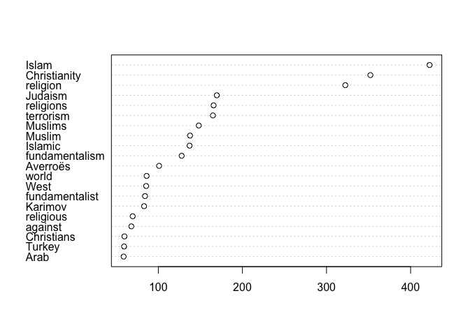

Motivation
Purpose: The focus of the package ‘polmineR’ is the interactive analysis of corpora using R. Core objectives for the development of the package are performance, usability, and a modular design.
Aims: Key aims for developing the package are:
To keep the original text accessible. A seamless integration of qualitative and quantitative steps in corpus analysis supports validation, based on inspecting the text behind the numbers.
To provide a library with standard tasks. It is an open source platform that will make text mining more productive, avoiding prohibitive costs to reimplement basics, or to run many lines of code to perform a basic tasks.
To create a package that makes the creation and analysis of subcorpora (‘partitions’) easy. A particular strength of the package is to support contrastive/comparative research.
To offer performance for users with a standard infrastructure. The package picks up the idea of a three-tier software design. Corpus data are managed and indexed by using the Open Corpus Workbench (CWB). The CWB is particularly efficient for storing large corpora and offers a powerful language for querying corpora, the Corpus Query Processor (CQP).
To support sharing consolidated and documented data, following the ideas of reproducible research.
Background: The polmineR-package was specifically developed to make full use of the XML annotation structure of the corpora created in the PolMine project (see polmine.sowi.uni-due.de). The core PolMine corpora are corpora of plenary protocols. In these corpora, speakers, parties etc. are structurally annotated. The polmineR-package is meant to help making full use of the rich annotation structure.
Core polmineR functionality
To demonstrate the core functionality of package, we load polmineR.
The package includes two small sample corpora (REUTERS and GERMAPARLMINI). Here we want two use somewhat bigger “real life” corpora (Europarl and GermaParl). The cwbtools package offers an installation mechanism, so we install this package first.
install.packages("cwbtools")We now install Europarl …
europarl <- "http://corpora.linguistik.uni-erlangen.de/demos/download/Europarl3-CWB-2010-02-28.tar.gz"
cwbtools::corpus_install(tarball = europarl)… and the GermaParl corpus of parliamentary debates.
cwbtools::corpus_install(doi = "10.5281/zenodo.3742113")partition (and partition_bundle)
All methods can be applied to a whole corpus, as well as to partitions (i.e. subcorpora). Use the metadata of a corpus (so-called s-attributes) to define a subcorpus.
ep2005 <- partition("EUROPARL-EN", text_year = "2006")
#> ... get encoding: latin1
#> ... get cpos and strucs
size(ep2005)
#> [1] 3100529
barroso <- partition("EUROPARL-EN", speaker_name = "Barroso", regex = TRUE)
#> ... get encoding: latin1
#> ... get cpos and strucs
size(barroso)
#> [1] 98142Partitions can be bundled into partition_bundle objects, and most methods can be applied to a whole corpus, a partition, or a partition_bundle object alike. Consult the package vignette to learn more.
count (using CQP syntax)
Counting occurrences of a feature in a corpus, a partition or in the partitions of a partition_bundle is a basic operation. By offering access to the query syntax of the Corpus Query Processor (CQP), polmineR package exposes a query syntax that goes far beyond regular expressions. See the CQP documentation to learn more.
count("EUROPARL-EN", "France")
#> query count freq
#> 1: France 5517 0.0001399122
count("EUROPARL-EN", c("France", "Germany", "Britain", "Spain", "Italy", "Denmark", "Poland"))
#> query count freq
#> 1: France 5517 1.399122e-04
#> 2: Germany 4196 1.064114e-04
#> 3: Britain 1708 4.331523e-05
#> 4: Spain 3378 8.566676e-05
#> 5: Italy 3209 8.138089e-05
#> 6: Denmark 1615 4.095673e-05
#> 7: Poland 1820 4.615557e-05
count("EUROPARL-EN", '"[pP]opulism"')
#> query count freq
#> 1: "[pP]opulism" 107 2.713542e-06dispersion (across one or two dimensions)
The dispersion method is there to analyse the dispersion of a query, or a set of queries across one or two dimensions (absolute and relative frequencies). The CQP syntax can be used.
populism <- dispersion("EUROPARL-EN", "populism", s_attribute = "text_year", progress = FALSE)
pop_regex <- dispersion("EUROPARL-EN", '"[pP]opulism"', s_attribute = "text_year", cqp = TRUE, progress = FALSE)cooccurrences (to analyse collocations)
The cooccurrences method is used to analyse the context of a query (including some statistics).
islam <- cooccurrences("EUROPARL-EN", query = 'Islam', left = 10, right = 10)
islam <- subset(islam, rank_ll <= 100)
dotplot(islam)
features (keyword extraction)
Compare partitions to identify features / keywords (using statistical tests such as chi square).
ep_2002 <- partition("EUROPARL-EN", text_year = "2002", p_attribute = "word")
ep_pre_2002 <- partition("EUROPARL-EN", text_year = 1997:2001, p_attribute = "word")
features(ep_2002, ep_pre_2002, included = FALSE) %>%
subset(rank_chisquare <= 10) %>%
format() %>%
knitr::kable(format = "markdown")| rank_chisquare | word | count_coi | count_ref | exp_coi | chisquare |
|---|---|---|---|---|---|
| 1 | 2002 | 1694 | 782 | 398.96 | 5011.70 |
| 2 | Johannesburg | 479 | 21 | 80.57 | 2348.97 |
| 3 | Seville | 378 | 26 | 65.10 | 1792.96 |
| 4 | Barcelona | 706 | 528 | 198.84 | 1542.16 |
| 5 | ’s | 10694 | 36727 | 7641.03 | 1457.07 |
| 6 | 2003 | 549 | 329 | 141.47 | 1399.45 |
| 7 | Copenhagen | 575 | 430 | 161.94 | 1256.06 |
| 8 | terrorism | 1221 | 1917 | 505.63 | 1206.67 |
| 9 | 02 | 233 | 2 | 37.87 | 1198.75 |
| 10 | candidate | 1217 | 2088 | 532.54 | 1048.84 |
kwic (also known as concordances)
So what happens in the context of a word, or a CQP query? To attain valid research results, reading will often be necessary. The kwic method will help, and uses the conveniences of DataTables, outputted in the Viewer pane of RStudio.
kwic("EUROPARL-EN", "Islam", meta = c("text_date", "speaker_name")) %>%
as.data.frame() %>%
.[1:8,] %>%
knitr::kable(format = "markdown", escape = FALSE)| meta | left | node | right |
|---|---|---|---|
| 1996-05-09 Oostlander |
, as for example with | Islam | here in Europe , so |
| 1996-05-09 Féret |
promotion of the study of | Islam | in Europe ’ , with |
| 1996-05-09 Féret |
seem to have forgotten that | Islam | makes no distinction between spiritual |
| 1996-06-05 von Habsburg |
, the old arguments against | Islam | are trotted out time and |
| 1996-06-05 von Habsburg |
various shades of opinion within | Islam | must not simply be lumped |
| 1996-06-05 von Habsburg |
there are various groups within | Islam | and that many of them |
| 1996-07-17 Blot |
represented by the growth of | Islam | to the south and east |
| 1996-09-18 Stirbois |
rushing into the arms of | Islam | . A fortnight later , |
read (the full text)
Corpus analysis involves moving from text to numbers, and back again. Use the read method, to inspect the full text of a partition (a speech given by chancellor Angela Merkel in this case).
as.TermDocumentMatrix (for text mining purposes)
Many advanced methods in text mining require term document matrices as input. Based on the metadata of a corpus, these data structures can be obtained in a fast and flexible manner, for performing topic modelling, machine learning etc.
speakers <- partition_bundle(
"EUROPARL-EN", s_attribute = "speaker_id",
progress = FALSE, verbose = FALSE
)
speakers_count <- count(speakers, p_attribute = "word", progress = TRUE)
tdm <- as.TermDocumentMatrix(speakers_count, col = "count")
dim(tdm)Installation
Windows
The following instructions assume that you have installed R. If not, install it from CRAN. An installation of RStudio is highly recommended.
The CRAN release of polmineR can be installed using install.packages(), all dependencies will be installed, too.
install.packages("polmineR")To install the most recent development version that is hosted in a GitHub repository, use the installation mechanism offered by the devtools package.
install.packages("devtools")
devtools::install_github("PolMine/polmineR", ref = "dev")Check the installation by loading polmineR and activating the corpora included in the package.
macOS
Install binary package from CRAN
CRAN offers polmineR as a binary package both for Intel processors (x86_64 architecture) and the newer Apple silicon chips (arm64 architecture). If R and RStudio are not yet installed, follow these preparatory steps.
Installing XQuartz is recommended. The available image works for Intel and Apple chips. Note that XQuartz capability is configured and used by R only if XQuartz has been installed before installing R.
Install R. Note that packages are available for both Intel 64-bit and Apple silicon arm64 chip architectures. Install what applies for you, see the R for macOS site.
Install RStudio. The free version of RStudio Desktop is enough. Starting with version 1.4, Apple silicon is supported. When installing RStudio, users with a Apple silicon chips are be asked to install Rosetta (say yes).
When starting RStudio the first time, you may be asked to install the Command Line Developer Tools. This is not necessary for basic polmineR usage, but recommended. Note that downloading the Command Line Developer Tools may require a stable internet connection and still take some time.
Then run this command for installing polmineR:
install.packages("polmineR")The installation mechanism will determine which binary version you require and install all required dependencies.
Install development version / build from source
For installing the development version of polmineR and building the package from source, the Command Line Developer Tools need to be installed. Install them from a terminal window as follows.
If you haven’t done so already, install XQuartz, R and RStudio (see previous instructions for binary installation).
The devtools package exposes a convenient and commonly used installation mechanism for installing a package from GitHub. First install the devtools package, which involves the installation of several dependencies.
install.packages("devtools") # unless devtools is already installedThen use the install_github() function as follows.
devtools::install_github("PolMine/polmineR", ref = "dev")The development version of polmineR may require the installation of a development version of the RcppCWB: polmineR interacts with the Corpus Workbench (CWB) via RcppCWB, an R package which exposes the C-level functions of the CWB. If you want or need to install a development version of RcppCWB, several system dependencies need to be fulfilled for compiling the package from source. See the README of the RcppCWB GitHub repository for instructions.
Linux (Ubuntu)
If you have not yet installed R on your Ubuntu machine, there is a good instruction at ubuntuuser. To install base R, enter in the terminal.
Make sure that you have installed the latest version of R. The following commands will add the R repository to the package sources and run an update. The second line assumes that you are using Ubuntu 16.04.
sudo apt-key adv --recv-keys --keyserver keyserver.ubuntu.com E084DAB9
sudo add-apt-repository 'deb http://ftp5.gwdg.de/pub/misc/cran/bin/linux/ubuntu xenial/'
sudo apt-get update
sudo apt-get upgradeIt is highly recommended to install RStudio, a powerful IDE for R. Output of polmineR methods is generally optimized to be displayed using RStudio facilities. If you are working on a remote server, running RStudio Server may be an interesting option to consider.
The RcppCWB package, the interface used by polmineR to query CWB corpora, will require the pcre, glib and pkg-config libraries. They can be installed as follows. In addition libxml2 is installed, a dependency of the R package xml2 that is used for manipulating html output.
sudo apt-get install libglib2.0-dev libssl-dev libcurl4-openssl-dev
sudo apt-get install libxml2-dev
sudo apt-get install libprotobuf-dev protobuf-compilerThe system requirements will now be fulfilled. From R, install dependencies for rcqp/polmineR first, and then rcqp and polmineR.
install.packages("RcppCWB")
install.packages("polmineR")Use devtools to install the development version of polmineR from GitHub.
install.packages("devtools")
devtools::install_github("PolMine/polmineR", ref = "dev")You may want to install packaged corpora to run examples in the vignette, and the man packages.
To have access to all package functions and to run all package tests, the installation of further system requirements and packages is required. The xlsx dependency requires that rJava is installed and configured for R. That is done on the shell:
To run package tests including (re-)building the manual and vignettes, a working installation of Latex is required, too. Be aware that this may be a time-consuming operation.
Now install the remaining packages from within R.
install.packages(pkgs = c("rJava", "xlsx", "tidytext"))Quoting polmineR
The polmineR package has been developed to be useful for research. If you publish research results making use of polmineR, the following citation is suggested to be included in publications.
Blaette, Andreas (2020). polmineR: Verbs and Nouns for Corpus Analysis. R package version v0.8.5. http://doi.org/10.5281/zenodo.4042093